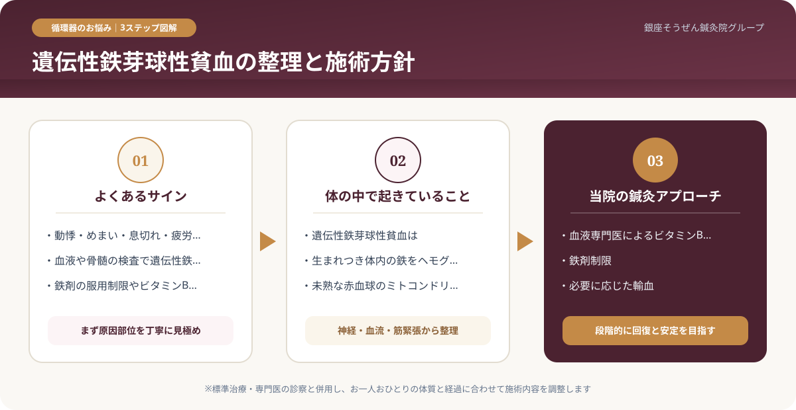

遺伝性鉄芽球性貧血の鍼灸
生まれつき鉄を赤血球合成に利用できず、骨髄に環状鉄芽球が現れる希少な貧血です。専門医管理を最優先とし、安定期の体調維持を支えます。
まず知っておきたい要点と改善の流れ

遺伝性鉄芽球性貧血は、生まれつき体内の鉄をヘモグロビン合成にうまく利用できず、未熟な赤血球のミトコンドリアに鉄が過剰蓄積した環状鉄芽球が骨髄に現れる希少疾患です。最多は主に男性に発症するX連鎖性で、ALAS2遺伝子変異によるヘム合成障害が原因となります。鉄が利用されない一方で体内に蓄積しやすく、長期化すると肝障害・糖尿病・心不全や一部で末梢神経障害を伴うことがあります。
このようなお悩みはありませんか？
- ✓動悸・めまい・息切れ・疲労感などの貧血症状が続いている
- ✓血液や骨髄の検査で遺伝性鉄芽球性貧血と診断されている
- ✓鉄剤の服用制限やビタミンB6療法・鉄キレート療法を受けている
- ✓治療を続けながら倦怠感や手足の冷え・しびれを和らげたい
当院の施術アプローチ・改善の流れ
なぜ鍼灸で改善へ向かうのか？（作用機序の図解）
遺伝性鉄芽球性貧血に対する鍼灸は、心拍変動・血管トーンを整える自律神経サポート機序を通じて、お体本来の回復力を引き出します。

循環器専門医の標準治療を絶対前提とし、手首や背部の安全な経穴へ低刺激でアプローチします。
心臓への過剰な交感神経刺激を穏やかに鎮め、心拍リズムと血管緊張の急変を抑えます。
ストレスで固まりやすい胸郭や横隔膜の緊張を解き、酸素摂取とリラックス反応を促します。
内服管理を厳守しながら、疲労やストレスが引き金となる症状不安の軽減を支えます。
院長YouTube解説・関連動画
遺伝性鉄芽性貧血の症状は、動悸やめまい、疲れやすさなど
遺伝性鉄芽性貧血の症状は、貧血によって起こる動悸やめまい、疲れやすさなどです。体に長い間上手に利用されなかった鉄がたまることで肝障害や糖尿病、心不全などが起こることもあります。
貧血が長い期間続く場合や貧血の程度が重く赤血球輸血が必要な場合は、鉄が過剰になることによって起こる肝障害や糖尿病、心不全などの症状は少しずつ進んでいきます。
1. 貧血の症状
鉄芽球性貧血は、骨髄に鉄が正常に利用されず、ヘモグロビンの合成が障害されるため、以下の貧血に関連する症状が起こります。
a. 疲労感
赤血球の減少により酸素の運搬が不足すると、慢性的な疲労や倦怠感が現れることが多いです。
b. 息切れ
軽い運動でも息切れを感じることがあります。酸素の供給が不足するために呼吸が早くなるためです。
c. 顔面蒼白
赤血球の減少により、皮膚や粘膜が蒼白になることがある。
2. 鉄過剰の症状
鉄芽球性貧血では、骨髄の赤血球前駆細胞に鉄が過剰に蓄積されるため、体内の鉄の代謝が乱れることがある。これにより以下の症状が出現することがある。
a. 肝臓の障害
鉄の蓄積により、肝臓の機能障害が起こることがあります。肝臓は体内の鉄の貯蔵庫であり、鉄の過剰は肝細胞にダメージを与える可能性があります。
b. 心臓の障害
鉄の過剰が心臓に蓄積すると、心筋障害や心不全の原因となることがある。
3. 特有の症状
遺伝性鉄芽球性貧血の一部のタイプには、特有の症状が現れることがある。例えば、特定の遺伝子変異によって、他の臓器に影響を及ぼすことがある。
a. 神経障害
ある種の鉄芽球性貧血では、末梢神経障害が見られることがあります。これは、手足のしびれや感覚の喪失として現れることがある。
b. 他の組織・器官への影響
特定の遺伝子変異によっては、肝臓、腎臓、心臓など、他の組織や器官への影響が見られる場合がある。
4. 進行と重症度
遺伝性鉄芽球性貧血の症状は、個人差があり、進行の速さや重症度も異なります。
X連鎖性の鉄芽球性貧血の場合の改善方法は、ビタミンB6を大量に投与することです。ビタミンB6はALAS2の働きに重要なため、大量に投与することでX連鎖性鉄芽球性貧血を発症している約半分の人に効果が見られています。
長い期間貧血が続く場合は過剰な鉄を取り除くことも必要です。
1. 症状に対する対処
遺伝性鉄芽球性貧血の改善の第一段階は通常、症状の管理です。
a. 鉄剤の制限
鉄の過剰蓄積を避けるため、鉄補給剤の使用を制限することが重要です。
b. 輸血
重度の貧血の場合、赤血球の輸血が必要となることがあります。これにより、酸素運搬能力の改善を図ります。
2. 薬
a. ビタミンB6補給
一部の鉄芽球性貧血のタイプは、ビタミンB6に対して応答することが知られています。この場合、ビタミンB6のサプリメントが投与され、多くの場合効果を示します。
b. 鉄過剰の改善
鉄過剰に対するキレート法は、体内の鉄の過剰を排泄するための方法です。キレート剤は鉄と結合し、尿や便と共に体外に排泄されます。
3. 骨髄移植
一部の重篤な鉄芽球性貧血の場合、骨髄移植が最善の改善オプションとなることがあります。適切なドナーを見つけるプロセスは複雑であり、移植自体もリスクを伴いますが、成功した場合には根本的な改善が期待できます。
4. 生活習慣の改善
鉄の過剰摂取を避け、健康的な食生活を心がけることも、改善の一部となります。患者の全体的な健康状態を向上させるための重要なステップです。
5. 個別化された改善計画
遺伝性鉄芽球性貧血の治療は、人によって異なるため、個別化されたアプローチが必要です。遺伝的なテストや他の手段によって特定された特有の変異に基づいて、計画が作成されることが多いです。
遺伝性鉄芽球性貧血の中でも、ビタミンB6に対して応答するタイプが存在します。ここでは、この関係性について詳しく説明します。
1. ビタミンB6の役割
ビタミンB6は、多くの酵素反応において補酵素として働く水溶性ビタミンで、アミノ酸代謝などに重要な役割を果たします。鉄芽球性貧血のうち、ビタミンB6に依存するタイプは、一部の酵素反応に障害があるために起こります。
2. ALAS2酵素との関連
鉄芽球性貧血とビタミンB6との関連は、特にアミノレブリン酸合成酵素（ALAS2）という酵素に関係しています。この酵素は、赤血球のヘモグロビン生成の最初の段階を触媒し、ビタミンB6を補酵素として使用します。
3. 遺伝子変異とビタミンB6応答性鉄芽球性貧血
遺伝性鉄芽球性貧血の中で、特にX染色体上のALAS2遺伝子に変異が見られるタイプが、ビタミンB6に応答するタイプとして知られています。この変異により、ALAS2酵素の活性が低下し、ヘモグロビンの生成が阻害されるため、貧血が引き起こされます。
4. ビタミンB6補給法
このタイプの遺伝性鉄芽球性貧血においては、ビタミンB6の補給が効果的な治法とされることが多いです。ビタミンB6の投与によって、ALAS2酵素の活性が向上し、ヘモグロビンの正常な生成が再開される場合があるためです。
5. 個別の対応が必要
ビタミンB6応答性の鉄芽球性貧血の判断と改善は専門的な知識と技術を要します。すべての人においてビタミンB6補給が効果を示すわけではないため、遺伝的なテストと慎重な評価が不可欠です。
遺伝性鉄芽球性貧血では、日常生活を送る上で特別に注意が必要なことはありません。
しかし、貧血が起こることによって様々な症状が現れたり、鉄が過剰になったり、合併症が起こったりするため、定期的に病院に行くことが大事です。
循環器・動悸・高血圧・心不全補助の全身ツボ図解
実際の施術ではお一人おひとりの体質・症状に合わせて選穴しますが、動悸・不整脈・本態性高血圧・慢性心不全の循環器治療併用サポートの臨床でよく用いられる代表的なツボの目安です。

📌 代表的なツボの詳細一覧表を開く（6穴） ▼
| ツボ名 | 位置の目安 | 主な狙い | セルフケアの注意点 |
|---|---|---|---|
| 内関（ないかん） | 手首の横ジワから指3本分肘寄りの中央 | 動悸・不整脈・狭心症補助で最も研究されている心包経の要穴 | 胸痛・冷や汗・失神がある場合は直ちに救急受診してください。 |
| 膻中（だんちゅう） | 胸の中央（胸骨上） | 胸のつかえ・交感神経の高ぶり・不安感の鎮静 | 強く押さず手のひらで温めながら深呼吸します。 |
| 神門（しんもん） | 手首の横ジワの小指側のくぼみ | 心拍の落ち着き・緊張性の動悸と不眠ケア | ペースメーカー使用時は電気鍼を避け手技のみで行います。 |
| 曲池（きょくち） | 肘を曲げた外側のシワの先端 | 血圧変動に伴う上肢・頭部の緊張緩和 | 降圧薬・心不全薬の自己判断での中止は厳禁です。 |
| 足三里（あしさんり） | 膝の下外側、指4本分下 | 末梢循環・自律神経バランスとQOL維持 | 身体負担の少ない穏やかな低刺激で行います。 |
| 太衝（たいしょう） | 足の甲、親指と人差し指の骨の間 | ストレス性の血圧上昇・末梢血管収縮の緩和 | 就寝前の優しい指圧でリラックスを促します。 |
国際査読論文の科学的エビデンス
国際的な医学データベース（PubMed・Cochrane等）で報告されている動悸・不整脈・本態性高血圧・慢性心不全の循環器治療併用サポート領域の代表的な査読済み鍼灸研究をまとめています（標準治療との併用や研究上の限界を含めて正確に掲載）。
📚 査読論文データ・PubMed出典リンクを開く（4件） ▼
| 年・研究デザイン | 対象・規模 | 主な結果 | 限界・出典 |
|---|---|---|---|
| 2019年 大規模多施設RCT | 慢性安定狭心症 398名解析（標準薬物療法併用） | 16週時点の4週間発作減少は実鍼群がシャム群比5.18回・待機群比5.63回多く有意改善（P<0.001）。 | 標準薬物療法への併用（補完）試験であり単独療法ではない。 JAMA Intern Med (PMID: 31355870) |
| 2007年 シャム対照RCT | 本態性高血圧 140名完了（ドイツ・24時間ABPM） | 治療終了時の24時間血圧はシャム比SBP -6.4mmHg・DBP -3.7mmHg有意低下（P<0.001）。 | 終了3〜6か月で治療前水準へ戻るため継続ケアが必要。 Circulation (PMID: 17548730) |
| 2015年 メタ解析 | 高血圧 23 RCTs（n=1,788） | 降圧薬＋実鍼は降圧薬＋シャム比でSBP -7.47mmHg・DBP -4.22mmHg有意低下。鍼単独は降圧薬と同等・根拠不十分。 | 盲検化・異質性に課題。降圧薬の自己中断は厳禁。 PLoS One (PMID: 26207806) |
| 2025年 メタ解析 | 心拍変動（HRV）10 RCTs（n=744） | 自律神経全体の適応指標SDNNを有意に改善、重篤な有害事象なし。 | LF・HFには不確実性が高くさらなる検証が必要。 Front Neurosci (PMID: 41230507) |
参考文献・出典
- 2019年 大規模多施設RCT（慢性安定狭心症 398名解析（標準薬物療法併用））— JAMA Intern Med (PMID: 31355870)
- 2007年 シャム対照RCT（本態性高血圧 140名完了（ドイツ・24時間ABPM））— Circulation (PMID: 17548730)
- 2015年 メタ解析（高血圧 23 RCTs（n=1,788））— PLoS One (PMID: 26207806)
- 2025年 メタ解析（心拍変動（HRV）10 RCTs（n=744））— Front Neurosci (PMID: 41230507)
よくある質問（FAQ）
Q. 貧血なので鉄分のサプリメントを摂ったほうがよいですか？▼
Q. 鍼灸施術はどのようなタイミングで相談できますか？▼
あわせて読まれる関連疾患（循環器のお悩み）
首の骨の中を通る椎骨動脈の内膜が裂ける重篤な血管疾患です。突然の頭痛は即救急受診が必須で、首への施術や操作は絶対禁忌です。
夜間や安静時に心室細動を起こし得る遺伝性不整脈疾患です。循環器専門医での厳重な管理を最優先に、安定期のストレス管理を支援します。
おへそが飛び出し腸管などが脱出する状態です。激しい痛みや戻らない膨らみは緊急受診が必須、安定期の腹圧対策等を補完支援します。
動脈血中の酸素が不足した状態です。医療機関での酸素投与と原因疾患の治療を最優先に、安定期の呼吸環境や疲労感をサポートします。
水分の過剰摂取で血液のナトリウム濃度が急低下する危険な状態です。急性期は救急対応が最優先で、安定期のストレス管理を支援します。
急激な減圧で血液や組織に窒素などの気泡が生じる疾患です。急性期は鍼灸禁忌で高気圧酸素治療が最優先、治癒後の回復を支えます。
CLINICAL RECOVERY CASES
✨ 実際の臨床改善事例・回復経過を見る
銀座本院をはじめ各院での実際の改善事例を症状別に絞り込んでご確認いただけます。
おひとりで悩まず、まずはご相談ください
銀座本院・川口・大宮・横浜・博多・田無の各院でご予約を承っております。